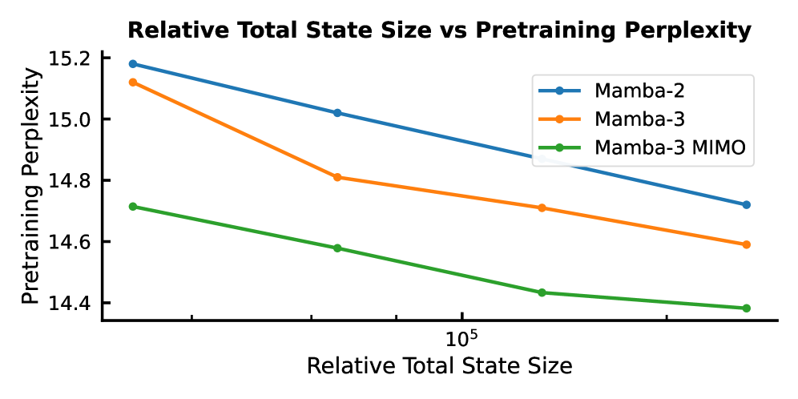

Why it matters왜 중요한가
As LLM value shifts to inference-time compute — long chains of thought, agentic loops — the decode step is the thing you actually pay for. Mamba-3 is designed backwards from that step rather than from training throughput.
LLM의 가치가 추론 시점 연산(긴 사고 사슬, 에이전트 루프)으로 옮겨가면서, 실제로 비용을 치르는 것은 디코딩 스텝이다. Mamba-3는 학습 처리량이 아니라 그 스텝에서 거꾸로 설계됐다.
The framing is the contribution. Mamba-2 was explicitly optimized for training speed and simplicity, and paid for it in expressivity; the field then papered over the gaps with bolt-ons (an explicit short convolution, extra norms). Mamba-3 instead asks what the underlying continuous system actually implies — and gets the convolution, the state tracking, and the hardware utilization as consequences of better discretization, complex eigenvalues, and a wider input map. Notably, this is an SSM-first story, deliberately not a linear-attention or test-time-regression one.
관점 자체가 기여다. Mamba-2는 대놓고 학습 속도와 단순성에 최적화됐고 그 대가를 표현력으로 치렀다. 이후 분야는 그 틈을 덧붙임(명시적 짧은 컨볼루션, 추가 norm)으로 메워왔다. Mamba-3는 대신 바탕의 연속 시스템이 실제로 무엇을 함의하는지 묻고, 컨볼루션·상태추적·하드웨어 활용을 더 나은 이산화·복소 고윳값·넓어진 입력 사상의 결과로 얻는다. 특히 이건 선형 어텐션이나 test-time regression이 아닌, 의도적으로 SSM 우선의 서사다.

By the numbers핵심 숫자
Decode kernel latency — the point of the whole design디코드 커널 지연 — 설계 전체의 목적
| Model모델 | FP32 d=64 | FP32 d=128 | BF16 d=64 | BF16 d=128 |
|---|---|---|---|---|
| Mamba-2 | 0.295 | 0.409 | 0.127 | 0.203 |
| Gated DeltaNet | 0.344 | 0.423 | 0.176 | 0.257 |
| Mamba-3 (SISO) | 0.310 | 0.399 | 0.110 | 0.156 |
| Mamba-3 (MIMO, R=4) | 0.333 | 0.431 | 0.137 | 0.179 |
Three changes, one viewpoint세 가지 변경, 하나의 관점
Exponential-trapezoidal
Mamba-1/2 used what this paper names "exponential-Euler" — a heuristic holding the endpoint, error O(Δ²). Averaging both endpoints instead gives a three-term recurrence with O(Δ³) error. That third term is secretly a width-2 convolution inside the recurrence, which is why the explicit conv layer becomes redundant.
Mamba-1/2는 이 논문이 "지수-오일러"라 이름 붙인 것, 즉 끝점을 유지하는 오차 O(Δ²)의 휴리스틱을 썼다. 양 끝점을 평균 내면 오차 O(Δ³)의 3항 순환식이 된다. 그 세 번째 항이 사실 순환식 내부의 너비-2 컨볼루션이며, 그래서 명시적 conv 층이 불필요해진다.
Complex states = data-dependent RoPE
Real non-negative eigenvalues can decay but not rotate, which is why prior SSMs fail parity. A complex SSM of state N/2 equals a real one of state N whose transition is block-diagonal 2×2 rotations — equivalently, RoPE applied to B and C with data-dependent angles. Expressivity restored at near-zero cost.
실수 비음수 고윳값은 감쇠는 해도 회전은 못 하고, 그래서 기존 SSM은 parity에 실패한다. 상태 N/2의 복소 SSM은 전이가 블록 대각 2×2 회전인 상태 N의 실수 SSM과 같다 — 즉 데이터 의존 각도로 B·C에 RoPE를 거는 것과 동치다. 거의 공짜로 표현력 복원.
MIMO
SISO's state update is an outer product of two vectors — few FLOPs per byte moved, so decode is memory-bound. Widening the input map to rank R makes it a matrix-matrix product: R× the FLOPs, but memory traffic still dominated by the state. The GPU stops idling; latency barely moves.
SISO의 상태 갱신은 두 벡터의 외적이라 옮긴 바이트당 FLOP이 적고, 그래서 디코딩이 메모리 바운드다. 입력 사상을 랭크 R로 넓히면 행렬-행렬 곱이 된다: FLOP은 R배지만 메모리 트래픽은 여전히 상태가 지배한다. GPU가 놀지 않게 되고, 지연은 거의 그대로다.
How it works어떻게 작동하나
- Formalize the discretization.이산화를 형식화한다. Build a general framework for discretizing linear time-varying SSMs; show Mamba-1/2's heuristic is its exponential-Euler special case. 선형 시변 SSM 이산화의 일반 프레임워크를 세우고, Mamba-1/2의 휴리스틱이 그 지수-오일러 특수 사례임을 보인다.
- Upgrade to trapezoidal.사다리꼴로 올린다. Apply a second-order rule to the state-input integral: h_t = α_t h_(t−1) + β_t B_(t−1) x_(t−1) + γ_t B_t x_t, with a learned data-dependent mix λ_t. 상태-입력 적분에 2차 규칙을 적용: h_t = α_t h_(t−1) + β_t B_(t−1) x_(t−1) + γ_t B_t x_t, 혼합 비율 λ_t는 데이터 의존으로 학습.
- Complexify via RoPE.RoPE로 복소화한다. Rewrite complex state transitions as cumulative 2×2 rotations folded into B and C — reusing the existing RoPE trick, so no new kernel is needed. 복소 상태 전이를 B·C에 접어 넣은 누적 2×2 회전으로 다시 쓴다 — 기존 RoPE 트릭 재사용이라 새 커널이 필요 없다.
- Widen to MIMO.MIMO로 넓힌다. Expand B to N×R and x to P×R. Train it as R² SISO SSMs but with a chunked algorithm costing only R×, and share B/C to keep parameters flat. B를 N×R로, x를 P×R로 확장. R²개의 SISO SSM처럼 학습하되 청크 알고리즘으로 비용은 R배만, B·C는 공유해 파라미터를 억제한다.
- Clean up the block.블록을 정리한다. Add BC/QK-norm and learnable B,C biases — which stabilizes large runs, lets the post-gate RMSNorm go, and removes the short causal convolution. BC/QK-norm과 학습 가능한 B·C 편향을 추가 — 대규모 학습이 안정되고, post-gate RMSNorm을 없애고, 짧은 causal 컨볼루션도 제거된다.
What to take away그래서, 가져갈 것
Better numerics is a free lunch. Moving from a first- to a second-order integration rule bought accuracy and deleted an architectural component — the short conv everyone treated as essential.
더 나은 수치해석은 공짜 점심이다. 1차에서 2차 적분 규칙으로 옮긴 것만으로 정확도를 얻고 동시에 다들 필수로 여기던 짧은 conv라는 구조 부품을 삭제했다.
Rotation, not just decay. Real non-negative eigenvalues were the hidden reason linear models failed state tracking; complex states fix it and cost almost nothing because RoPE already exists.
감쇠만이 아니라 회전. 실수 비음수 고윳값이 선형 모델의 상태추적 실패의 숨은 이유였고, 복소 상태가 이를 고치며 RoPE가 이미 있으니 비용은 거의 없다.
Optimize the step you pay for. Arithmetic intensity — not FLOP count or big-O — is the decode bottleneck, and MIMO buys real quality in FLOPs the GPU was wasting anyway.
비용을 치르는 스텝을 최적화하라. 디코딩의 병목은 FLOP 수나 big-O가 아니라 산술 강도이며, MIMO는 어차피 GPU가 낭비하던 FLOP으로 실제 품질을 산다.